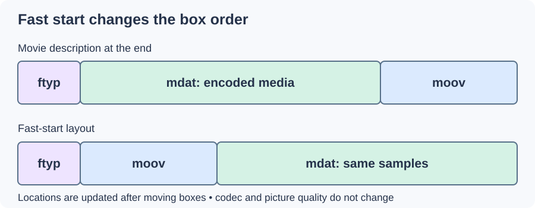

MP4 Fast Start
An MP4 can contain perfectly good media while making a player fetch the end of the file before it knows how to play the beginning. Fast start changes the layout so that the movie description arrives early.
In a conventional nonfragmented MP4, the moov box describes tracks, sample timing, and data locations. Writers commonly finish that information after writing the encoded media, leaving moov near the end. Fast-start processing moves it ahead of the bulk media data and updates locations that changed.

Original simplified layouts. Box widths do not represent actual sizes.
The benefit depends on how the file is read
A reader downloading bytes sequentially can reach the description quickly and begin once enough media is available. A server and reader that support byte-range requests can instead fetch a trailing moov directly; they need not download the entire file first.
For an Emby library, this means fast start can help some direct file-delivery paths, while a repackaged streaming path may have its own initialization structure. It is not a universal explanation for every startup delay. Network access, decoding, and server processing still matter.
Moving moov is a packaging operation. It does not reduce bitrate, improve sound, or make an unsupported codec decodable. The bulk picture and sound samples can remain unchanged, although the file's overall bytes and offsets differ.
Fast start is also distinct from fragmented MP4. A conventional fast-start file places its overall sample description early; a fragmented file describes successive groups of samples. Choose the layout the intended reader expects, and check both startup and seeking after a packaging change.